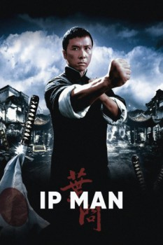

Also known as:葉問 (original title)
Country:Hong Kong, 106 minutes
Spoken languages:Mandarin, Japanese, Cantonese
Genres:Drama, Action, History
Director(s):Wilson Yip
Writer(s):Edmond Wong Chi-mun, Chan Tai-lee
Video Codec:Unknown
Number: 6335

Certification:R
Storyline:
A semi-biographical account of Yip Man, the first martial arts master to teach the Chinese martial art of Wing Chun. The film focuses on events surrounding Ip that took place in the city of Foshan between the 1930s to 1940s during the Second Sino-Japanese War. Directed by Wilson Yip, the film stars Donnie Yen in the lead role, and features fight choreography by Sammo Hung.
Cast:
Donnie Yen (as Yip Man), Simon Yam (as Zhou Qing Quan), Lynn Hung Doi-Lam (as Zhang Yong Cheng), Hiroyuki Ikeuchi (as General Miura), Gordon Lam Ka-tung (as Captain Li Zhao)
Medium: Media file,
Location: D:\Ip Man\Ip Man 1.mkv
Loaned: No
Aspect ratio: Unknown